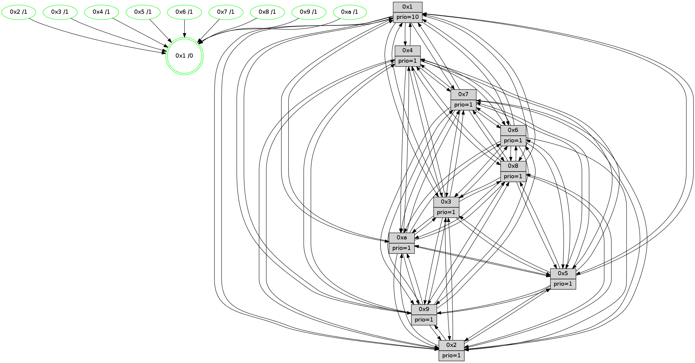

>> << IDX [start] -100 -25 -5 +0 +5 +25 +100 [1415.12367415]
 Previous packets
----------------------------------------------------------------------
1410.394886 beacon01(faad) #0 coord=01,02,03,04,05,06,07,0a,09,08 cycle=688.0ms assoc
-- color-indic=1 64 de 88
1410.404869 beacon02(faad) #0 coord=01,02,03,04,05,06,07,0a,09,08 cycle=688.0ms assoc 64 4d b9
1410.414868 beacon03(faad) #0 coord=01,02,03,04,05,06,07,0a,09,08 cycle=688.0ms assoc 64 37 f4
1410.424868 beacon04(faad) #0 coord=01,02,03,04,05,06,07,0a,09,08 cycle=688.0ms assoc 64 40 1e
1410.434869 beacon05(faad) #0 coord=01,02,03,04,05,06,07,0a,09,08 cycle=688.0ms assoc 64 3a 53
1410.444869 beacon06(faad) #0 coord=01,02,03,04,05,06,07,0a,09,08 cycle=688.0ms assoc 64 b4 84
1410.454869 beacon07(faad) #0 coord=01,02,03,04,05,06,07,0a,09,08 cycle=688.0ms assoc 64 ce c9
1410.464874 beacon0a(faad) #0 coord=01,02,03,04,05,06,07,0a,09,08 cycle=688.0ms assoc 64 bf c2
1410.484875 beacon08(faad) #0 coord=01,02,03,04,05,06,07,0a,09,08 cycle=688.0ms assoc 64 4b 58
1410.496409 [Hello(10): seq=832 sym=6,2,3,8,7,5,9,4,1 sysInfo=hasWarning stat=6:1,0,2,4/2:14,9,6,0/3:4,7,10,15/8:1,6,3,3/7:7,13,0,10/5:8,9,14,1/9:5,9,3,1/4:13,6,13,3/1:8,4,3,1]
1410.500047 [Hello(9): seq=843 sym=2,5,3,4,7,6,8,10,1 sysInfo=hasWarning stat=2:15,4,1,11/5:15,5,2,8/3:0,8,11,4/4:9,3,7,3/7:7,12,9,5/6:14,10,15,14/8:5,10,7,6/10:10,11,3,0/1:10,3,7,1]
1410.506092 [Color(1) seq=579 @0:0 prio=10]
1410.508463 [Color(4) seq=438 @0:0 prio=1]
1410.510715 [Hello(8): seq=843 sym=5,2,3,7,9,6,4,10,1 sysInfo=hasWarning stat=5:2,8,8,1/2:10,7,0,12/3:4,9,6,4/7:13,4,3,2/9:4,15,9,5/6:9,8,1,0/4:8,0,5,2/10:0,12,15,5/1:7,11,9,0]
1410.513844 [Color(8) seq=498 @0:0 prio=1]
1410.517253 [Hello(7): seq=899 sym=2,3,5,6,4,8,9,10,1 sysInfo=hasWarning stat=2:15,14,8,4/3:7,5,12,3/5:4,5,12,3/6:4,1,9,12/4:2,0,9,2/8:2,5,1,0/9:11,7,9,2/10:5,4,1,7/1:14,13,5,0]
1410.521665 [Color(7) seq=427 @0:0 prio=1]
----------------------------------------------------------------------
1411.183018 beacon01(faad) #0 coord=01,02,03,04,05,06,07,0a,09,08 cycle=688.0ms assoc
-- color-indic=1 64 ca e6
1411.193000 beacon02(faad) #0 coord=01,02,03,04,05,06,07,0a,09,08 cycle=688.0ms assoc 64 59 d7
1411.203000 beacon03(faad) #0 coord=01,02,03,04,05,06,07,0a,09,08 cycle=688.0ms assoc 64 23 9a
1411.213001 beacon04(faad) #0 coord=01,02,03,04,05,06,07,0a,09,08 cycle=688.0ms assoc 64 54 70
1411.223001 beacon05(faad) #0 coord=01,02,03,04,05,06,07,0a,09,08 cycle=688.0ms assoc 64 2e 3d
1411.233000 beacon06(faad) #0 coord=01,02,03,04,05,06,07,0a,09,08 cycle=688.0ms assoc 64 a0 ea
1411.243000 beacon07(faad) #0 coord=01,02,03,04,05,06,07,0a,09,08 cycle=688.0ms assoc 64 da a7
1411.253007 beacon0a(faad) #0 coord=01,02,03,04,05,06,07,0a,09,08 cycle=688.0ms assoc 64 ab ac
1411.273006 beacon08(faad) #0 coord=01,02,03,04,05,06,07,0a,09,08 cycle=688.0ms assoc 64 5f 36
1411.284909 [Hello(1): seq=809 sym=4,2,9,5,10,3,8,6,7 sysInfo=coloring-mode-on,ColoringModeRequestCalled stat=4:9,10,11,4/2:10,15,3,5/9:10,2,5,2/5:11,3,7,9/10:11,4,6,8/3:13,10,7,11/8:7,0,6,3/6:1,6,4,1/7:8,5,12,2]
1411.288803 [Color(9) seq=459 @0:0 prio=1]
1411.290021 [Color(10) seq=489 @0:0 prio=1]
1411.292132 [Hello(2): seq=896 sym=4,5,7,3,9,8,10,1 sysInfo=hasWarning stat=4:1,11,9,14/5:12,4,0,3/7:0,8,12,2/3:4,6,1,0/9:6,12,8,10/8:2,7,6,12/10:0,2,6,11/1:15,5,3,0]
1411.295010 [Hello(6): seq=900 sym=3,2,5,4,7,9,8,10,1 sysInfo=hasWarning stat=3:1,4,2,0/2:5,6,2,0/5:13,0,6,4/4:6,9,11,9/7:12,10,7,0/9:15,10,15,11/8:6,0,0,6/10:7,15,7,13/1:10,7,8,1]
1411.298451 [Color(6) seq=532 @0:0 prio=1]
1411.301680 [Color(2) seq=476 @0:0 prio=1]
1411.303179 [Hello(5): seq=900 sym=7,6,4,3,1,9,8,10,2 sysInfo=hasWarning stat=7:4,15,15,1/6:5,11,14,4/4:8,5,7,0/3:9,7,11,2/1:13,4,10,0/9:8,3,0,11/8:6,12,5,4/10:9,15,4,9/2:13,7,10,7]
1411.306566 [Hello(3): seq=900 sym=1,7,6,2,4,8,9,10,5 sysInfo=hasWarning stat=1:4,1,12,0/7:4,7,13,15/6:15,9,6,1/2:6,2,2,2/4:11,0,0,14/8:11,7,7,5/9:9,8,11,1/10:14,3,1,5/5:4,12,14,1]
1411.311620 [Color(3) seq=529 @0:0 prio=1]
----------------------------------------------------------------------
1411.971149 beacon01(faad) #0 coord=01,02,03,04,05,06,07,0a,09,08 cycle=688.0ms assoc
-- color-indic=1 64 76 e3
1411.981131 beacon02(faad) #0 coord=01,02,03,04,05,06,07,0a,09,08 cycle=688.0ms assoc 64 e5 d2
1411.991131 beacon03(faad) #0 coord=01,02,03,04,05,06,07,0a,09,08 cycle=688.0ms assoc 64 9f 9f
1412.001131 beacon04(faad) #0 coord=01,02,03,04,05,06,07,0a,09,08 cycle=688.0ms assoc 64 e8 75
1412.011133 beacon05(faad) #0 coord=01,02,03,04,05,06,07,0a,09,08 cycle=688.0ms assoc 64 92 38
1412.021133 beacon06(faad) #0 coord=01,02,03,04,05,06,07,0a,09,08 cycle=688.0ms assoc 64 1c ef
1412.031134 beacon07(faad) #0 coord=01,02,03,04,05,06,07,0a,09,08 cycle=688.0ms assoc 64 66 a2
1412.041137 beacon0a(faad) #0 coord=01,02,03,04,05,06,07,0a,09,08 cycle=688.0ms assoc 64 17 a9
1412.051137 beacon09(faad) #0 coord=01,02,03,04,05,06,07,0a,09,08 cycle=688.0ms assoc 64 99 7e
1412.061137 beacon08(faad) #0 coord=01,02,03,04,05,06,07,0a,09,08 cycle=688.0ms assoc 64 e3 33
1412.073965 [Hello(9): seq=844 sym=2,5,3,4,7,6,8,10,1 sysInfo=hasWarning stat=2:0,5,1,11/5:0,6,2,8/3:1,9,11,4/4:9,4,7,3/7:8,13,9,5/6:15,11,15,14/8:6,11,7,6/10:10,12,3,0/1:11,4,7,1]
1412.077008 [Color(5) seq=447 @0:0 prio=1]
1412.078559 [Hello(10): seq=833 sym=6,2,3,8,7,5,9,4,1 sysInfo=hasWarning stat=6:2,1,2,4/2:15,10,6,0/3:5,8,10,15/8:2,7,3,3/7:8,14,0,10/5:9,9,14,1/9:6,9,3,1/4:13,7,13,3/1:9,5,3,1]
1412.081117 [STC(1) #0.243 tree-change,inconsistent-stability,stable,to-color d=0]
1412.082662 [Hello(4): seq=900 sym=5,8,6,2,3,9,7,10,1 sysInfo= stat=5:2,4,9,2/8:2,7,1,0/6:11,0,1,15/2:5,0,9,1/3:10,12,3,15/9:0,4,15,2/7:13,5,1,0/10:10,14,2,14/1:3,3,8,1]
1412.086419 [Color(1) seq=580 @0:0 prio=10]
1412.091395 [Color(4) seq=439 @0:0 prio=1]
1412.093161 [Hello(7): seq=900 sym=2,3,5,6,4,8,9,10,1 sysInfo=hasWarning stat=2:0,15,8,4/3:8,6,12,3/5:5,5,12,3/6:5,2,9,12/4:2,0,9,2/8:2,5,1,0/9:12,8,9,2/10:6,5,1,7/1:15,13,5,0]
1412.097893 [Color(8) seq=499 @0:0 prio=1]
1412.099650 [Color(7) seq=428 @0:0 prio=1]
----------------------------------------------------------------------
1412.759279 beacon01(faad) #0 coord=01,02,03,04,05,06,07,0a,09,08 cycle=688.0ms assoc
-- color-indic=1 64 b2 ed
1412.769261 beacon02(faad) #0 coord=01,02,03,04,05,06,07,0a,09,08 cycle=688.0ms assoc 64 21 dc
1412.779261 beacon03(faad) #0 coord=01,02,03,04,05,06,07,0a,09,08 cycle=688.0ms assoc 64 5b 91
1412.789261 beacon04(faad) #0 coord=01,02,03,04,05,06,07,0a,09,08 cycle=688.0ms assoc 64 2c 7b
1412.799262 beacon05(faad) #0 coord=01,02,03,04,05,06,07,0a,09,08 cycle=688.0ms assoc 64 56 36
1412.809261 beacon06(faad) #0 coord=01,02,03,04,05,06,07,0a,09,08 cycle=688.0ms assoc 64 d8 e1
1412.819262 beacon07(faad) #0 coord=01,02,03,04,05,06,07,0a,09,08 cycle=688.0ms assoc 64 a2 ac
1412.829265 beacon0a(faad) #0 coord=01,02,03,04,05,06,07,0a,09,08 cycle=688.0ms assoc 64 d3 a7
1412.849266 beacon08(faad) #0 coord=01,02,03,04,05,06,07,0a,09,08 cycle=688.0ms assoc 64 27 3d
1412.861054 [Hello(5): seq=901 sym=7,6,4,3,1,9,8,10,2 sysInfo=hasWarning stat=7:5,0,15,1/6:5,11,14,4/4:9,6,7,0/3:10,8,11,2/1:13,5,11,0/9:9,3,0,11/8:6,13,5,4/10:10,15,4,9/2:13,7,10,7]
1412.863832 [Hello(1): seq=810 sym=4,2,9,5,10,3,8,6,7 sysInfo=coloring-mode-on,ColoringModeRequestCalled stat=4:9,11,11,4/2:11,0,3,5/9:11,3,5,2/5:12,3,7,9/10:11,5,6,8/3:14,11,7,11/8:7,1,6,3/6:2,7,4,1/7:9,6,12,2]
1412.866555 [Hello(6): seq=901 sym=3,2,5,4,7,9,8,10,1 sysInfo=hasWarning stat=3:2,5,2,0/2:5,7,2,0/5:14,1,6,4/4:7,10,11,9/7:13,11,7,0/9:0,10,15,11/8:6,1,0,6/10:8,15,7,13/1:11,8,9,1]
1412.869565 [STC(9)->1 #0.243 tree-change,inconsistent-stability,stable,to-color d=1]
1412.870853 [Hello(2): seq=897 sym=4,5,7,3,9,8,10,1 sysInfo=hasWarning stat=4:2,12,9,14/5:13,5,0,3/7:1,9,12,2/3:5,7,1,0/9:7,12,8,10/8:2,8,6,12/10:1,2,6,11/1:0,6,4,0]
1412.873225 [Hello(3): seq=901 sym=1,7,6,2,4,8,9,10,5 sysInfo=hasWarning stat=1:5,2,13,0/7:4,8,13,15/6:15,9,6,1/2:6,2,2,2/4:12,1,0,14/8:12,8,7,5/9:10,8,11,1/10:15,3,1,5/5:4,13,14,1]
1412.876127 [Color(9) seq=460 @0:0 prio=1]
1412.878269 [STC(6)->1 #0.243 tree-change,inconsistent-stability,stable,to-color d=1]
1412.879937 [STC(10)->1 #0.243 tree-change,inconsistent-stability,stable,to-color d=1]
1412.881199 [Color(6) seq=533 @0:0 prio=1]
1412.882440 [STC(2)->1 #0.243 tree-change,inconsistent-stability,stable,to-color d=1]
1412.886575 [STC(3)->1 #0.243 tree-change,inconsistent-stability,stable,to-color d=1]
1412.889184 [Color(10) seq=490 @0:0 prio=1]
1412.891846 [Color(3) seq=530 @0:0 prio=1]
----------------------------------------------------------------------
1413.547410 beacon01(faad) #0 coord=01,02,03,04,05,06,07,0a,09,08 cycle=688.0ms assoc
-- color-indic=1 64 0e e8
1413.557393 beacon02(faad) #0 coord=01,02,03,04,05,06,07,0a,09,08 cycle=688.0ms assoc 64 9d d9
1413.567394 beacon03(faad) #0 coord=01,02,03,04,05,06,07,0a,09,08 cycle=688.0ms assoc 64 e7 94
1413.577393 beacon04(faad) #0 coord=01,02,03,04,05,06,07,0a,09,08 cycle=688.0ms assoc 64 90 7e
1413.587394 beacon05(faad) #0 coord=01,02,03,04,05,06,07,0a,09,08 cycle=688.0ms assoc 64 ea 33
1413.597395 beacon06(faad) #0 coord=01,02,03,04,05,06,07,0a,09,08 cycle=688.0ms assoc 64 64 e4
1413.607393 beacon07(faad) #0 coord=01,02,03,04,05,06,07,0a,09,08 cycle=688.0ms assoc 64 1e a9
1413.617400 beacon0a(faad) #0 coord=01,02,03,04,05,06,07,0a,09,08 cycle=688.0ms assoc 64 6f a2
1413.637399 beacon08(faad) #0 coord=01,02,03,04,05,06,07,0a,09,08 cycle=688.0ms assoc 64 9b 38
1413.649265 [Hello(10): seq=834 sym=6,2,3,8,7,5,9,4,1 sysInfo=hasWarning stat=6:2,2,2,4/2:15,10,6,0/3:5,9,10,15/8:2,8,3,3/7:9,15,0,10/5:10,9,14,1/9:6,9,3,1/4:14,8,13,3/1:10,6,4,1]
1413.652287 [Color(1) seq=581 @0:0 prio=10]
1413.653827 [Color(5) seq=448 @0:0 prio=1]
1413.655155 PARSE ERROR************************
Traceback (most recent call last):
File "PacketAnalysis.py", line 167, in showOperaPacket
structPacket = OperaPacketParse.parsePacket(rawPacket)
File "../../pkg-python/HipSens/Core/OperaPacketParse.py", line 461, in parsePacket
return parseHelloMessage(data)
File "../../pkg-python/HipSens/Core/OperaPacketParse.py", line 109, in parseHelloMessage
sysInfo,stability,colorInfo = struct.unpack("!HBB", linkList[0:4])
error: unpack requires a string argument of length 4
48 34 04 00 03 85 00 02 02 12 05 00 08 00 06 00 02 00 03 00 09 00 07 00 0a 00 01 00 53 04 00 00 00 00 4c 12 29 43 01 82 f2 1c 1a 16 f4 db 20 51 01 6d e3 fa 18 34 53 d7
1413.659573 [Color(4) seq=440 @0:0 prio=1]
1413.661051 [Hello(8): seq=845 sym=5,2,3,7,9,6,4,10,1 sysInfo=hasWarning stat=5:4,8,8,1/2:12,9,1,12/3:6,11,7,4/7:14,6,3,2/9:6,1,10,5/6:11,10,2,0/4:8,0,5,2/10:1,14,0,5/1:9,11,9,0]
1413.663924 [Hello(7): seq=901 sym=2,3,5,6,4,8,9,10,1 sysInfo=hasWarning stat=2:1,0,9,4/3:9,7,13,3/5:6,5,12,3/6:6,3,10,12/4:2,0,9,2/8:2,5,1,0/9:13,9,10,2/10:6,6,2,7/1:0,13,5,0]
1413.668037 [Color(7) seq=429 @0:0 prio=1]
1413.669585 [Color(8) seq=500 @0:0 prio=1]
----------------------------------------------------------------------
1414.335544 beacon01(faad) #0 coord=01,02,03,04,05,06,07,0a,09,08 cycle=688.0ms assoc
-- color-indic=1 64 3a f0
1414.345525 beacon02(faad) #0 coord=01,02,03,04,05,06,07,0a,09,08 cycle=688.0ms assoc 64 a9 c1
1414.355526 beacon03(faad) #0 coord=01,02,03,04,05,06,07,0a,09,08 cycle=688.0ms assoc 64 d3 8c
1414.365526 beacon04(faad) #0 coord=01,02,03,04,05,06,07,0a,09,08 cycle=688.0ms assoc 64 a4 66
1414.375528 beacon05(faad) #0 coord=01,02,03,04,05,06,07,0a,09,08 cycle=688.0ms assoc 64 de 2b
1414.385526 beacon06(faad) #0 coord=01,02,03,04,05,06,07,0a,09,08 cycle=688.0ms assoc 64 50 fc
1414.395526 beacon07(faad) #0 coord=01,02,03,04,05,06,07,0a,09,08 cycle=688.0ms assoc 64 2a b1
1414.405533 beacon0a(faad) #0 coord=01,02,03,04,05,06,07,0a,09,08 cycle=688.0ms assoc 64 5b ba
1414.425532 beacon08(faad) #0 coord=01,02,03,04,05,06,07,0a,09,08 cycle=688.0ms assoc 64 af 20
1414.438721 [Hello(1): seq=811 sym=4,2,9,5,10,3,8,6,7 sysInfo=coloring-mode-on,ColoringModeRequestCalled stat=4:10,12,11,4/2:12,0,4,5/9:11,4,6,2/5:12,4,7,9/10:12,6,7,8/3:15,12,8,11/8:8,2,6,3/6:3,8,5,1/7:10,7,12,2]
1414.442077 [Color(9) seq=461 @0:0 prio=1]
1414.443359 [Color(10) seq=491 @0:0 prio=1]
1414.444912 [Hello(3): seq=902 sym=1,7,6,2,4,8,9,10,5 sysInfo=hasWarning stat=1:6,3,13,0/7:5,9,13,15/6:15,9,6,1/2:6,2,2,2/4:13,2,0,14/8:13,9,7,5/9:10,8,11,1/10:0,3,1,5/5:5,14,14,1]
1414.449388 [Hello(2): seq=898 sym=4,5,7,3,9,8,10,1 sysInfo=hasWarning stat=4:3,13,9,14/5:14,6,0,3/7:2,10,12,2/3:5,8,2,0/9:7,12,8,10/8:3,9,6,12/10:2,3,6,11/1:1,7,4,0]
1414.453341 [Hello(5): seq=902 sym=7,6,4,3,1,9,8,10,2 sysInfo=hasWarning stat=7:5,1,15,1/6:5,11,14,4/4:10,7,7,0/3:10,9,12,2/1:13,5,11,0/9:10,3,0,11/8:7,14,5,4/10:11,0,4,9/2:13,7,10,7]
1414.456056 [Color(2) seq=478 @0:0 prio=1]
1414.457604 [Color(3) seq=531 @0:0 prio=1]
1414.461507 [Hello(6): seq=902 sym=3,2,5,4,7,9,8,10,1 sysInfo=hasWarning stat=3:2,6,3,0/2:5,7,3,0/5:15,2,6,4/4:8,11,11,9/7:14,12,7,0/9:0,10,15,11/8:7,2,0,6/10:9,0,7,13/1:12,9,9,1]
1414.464962 [Color(6) seq=534 @0:0 prio=1]